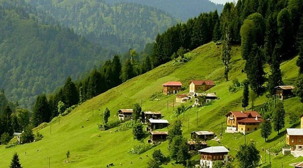
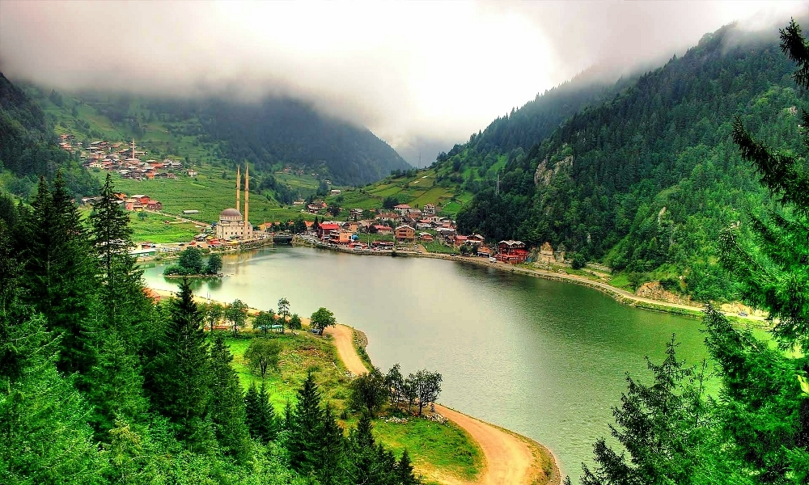

Karadeniz bölgesi yer olarak Gürcistan ülkesinden başlayarak batıda Sakarya ovasına kadar uzayan bölgede bulunmaktadır. Doğu batı uzunluğu yaklaşık olarak 1400 kilometre civarındadır. Genişliği ise yer yer 100 ila 200 kilometre arasında değişiklik göstermektedir. Bölge adını komşu olduğu Karadeniz’den almıştır. Bölgenin tümü doğal, ekonomik ve beşeri özellikler bakımından benzer özellikler gösterir. Ancak yer şekilleri, iklim, tarım, yerleşme ve ekonomik etkinliklere bağlı olarak 3 bölüme ayrılmıştır. Bunlar Batı, Orta ve Doğu Karadeniz’dir.
Karadeniz bölgesinde toplam il sayısı 18’dir. Karadeniz bölgemiz il sayısı bakımından ülkemizde en çok il bulunan bölge olma özelliğini elinde bulundurmaktadır. İlleri toprak büyüklüğü bakımından fazla büyük değildir. En büyük toprağa sahip ili ülkemizde toprak büyüklüğü bakımından 18. Sırada bulu nan Kastamonu ilidir.
Bölgenin kıyı şeridinde her mevsim yağışlı, yazları serin, kışları ılık geçen Karadeniz iklimi etkilidir. Bu iklimi etkileri Orta Karadeniz’de yer şekillerine bağlı olarak iç kesimlere kadar ulaşır. Batı ve Doğu Karadeniz’in iç kesimlerinde iklim karasallaşır, yağış miktarı azalır.
Karadeniz bölgesinin ulaşımı hem karayolu hem de deniz yolu ile sağlanmaktadır. Birçok ilinde önemli limanlar bulunmakla birlikte son yıllarda yapılan Karadeniz sahil yolu ile ulaşım daha da kolaylaşmıştır. Karadeniz bölgesinin en önemli limanları Trabzon limanı, Samsun Limanı ve Zonguldak limanlarıdır. Özellikle Samsun ve Zonguldak limanları demiryolu ağı ile iç bölgelere bağlanmaktadır.
Bölgede gerek tarihi kalıntılar gerekse doğal güzellikler turizm için önemli potansiyel oluşturmaktadır. Karadeniz kıyıları çok çeşitli bitki ve ağaçlar ile bunların oluşturduğu manzaralara sahiptir. Yaylacılık faaliyetleri son yıllarda gelişen turizm faaliyetlerinden biridir.
Bolu Kartalkaya'da ve Ilgaz Dağları'nda kış turizmi yaygındır. Abant gölü ile Yedigöller çevresindeki sayfiye yerleri, Bolu, Düzce, Kızılcahamam kaplıcaları, Amasra, Cide, Sinop Trabzon (Sümela Manastırı) ve Amasya'da (Kral mezarları) yer alan tarihi eserler Karadeniz Bölgesi'nin turizm potansiyellerini oluşturur.
Her mevsim yağışlı olmasından dolayı deniz turizmi gelişmemiştir.